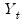
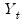

The next section shows the estimated coefficients, coefficient standard errors, and t-statistics. In addition to the estimates of the ARMA coefficients, EViews will display estimates of the fractional integration parameter for ARFIMA models, and the estimate of the error variance if the ARMA estimation method is maximum likelihood, labeled SIGMASQ.
The second set of residuals are the estimated one-period ahead forecast errors,

. As the name suggests, these residuals represent the forecast errors you would make if you computed forecasts using a prediction of the residuals based upon past values of your data, in addition to the contemporaneous information. In essence, you improve upon the unconditional forecasts and residuals by taking advantage of the predictive power of the lagged residuals.
If  has reciprocal roots outside the unit circle, we say that the MA process is noninvertible
has reciprocal roots outside the unit circle, we say that the MA process is noninvertible, which makes interpreting and using the MA results difficult. However, noninvertibility poses no substantive problem, since as Hamilton (1994a, p. 65) notes, there is always an equivalent representation for the MA model where the reciprocal roots lie inside the unit circle. Accordingly, you should try to re-estimate your model with different starting values until you get a moving average process that satisfies invertibility. Alternatively, you may wish to turn off MA backcasting (see
“Initializing MA Innovations”).


 . These residuals are the errors that you would obtain if you made a prediction of the value of  using contemporaneous information while ignoring the information contained in the lagged residuals.
. These residuals are the errors that you would obtain if you made a prediction of the value of  using contemporaneous information while ignoring the information contained in the lagged residuals.  , the standard error of regression, and the Durbin-Watson statistic— reported by EViews are based on the estimated one-period ahead forecast errors,
, the standard error of regression, and the Durbin-Watson statistic— reported by EViews are based on the estimated one-period ahead forecast errors,  .
. has a real root whose absolute value exceeds one or a pair of complex reciprocal roots outside the unit circle (that is, with modulus greater than one), it means that the autoregressive process is explosive.
has a real root whose absolute value exceeds one or a pair of complex reciprocal roots outside the unit circle (that is, with modulus greater than one), it means that the autoregressive process is explosive.  lies between –1 (extreme negative serial correlation) and +1 (extreme positive serial correlation).
lies between –1 (extreme negative serial correlation) and +1 (extreme positive serial correlation).